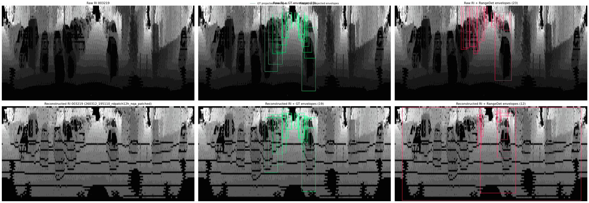
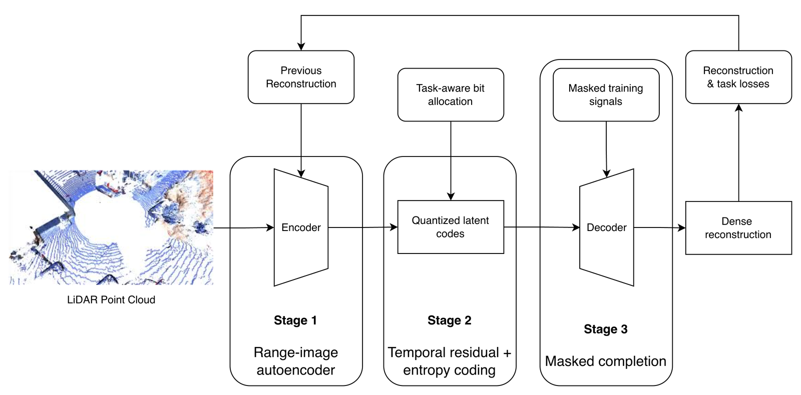
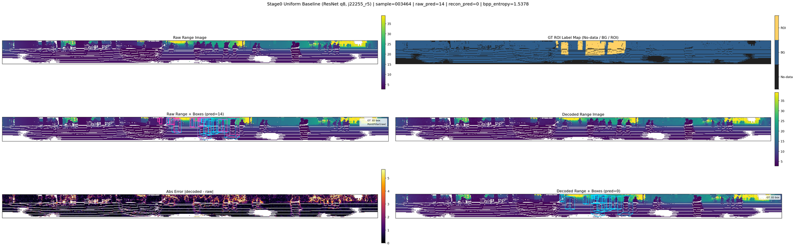
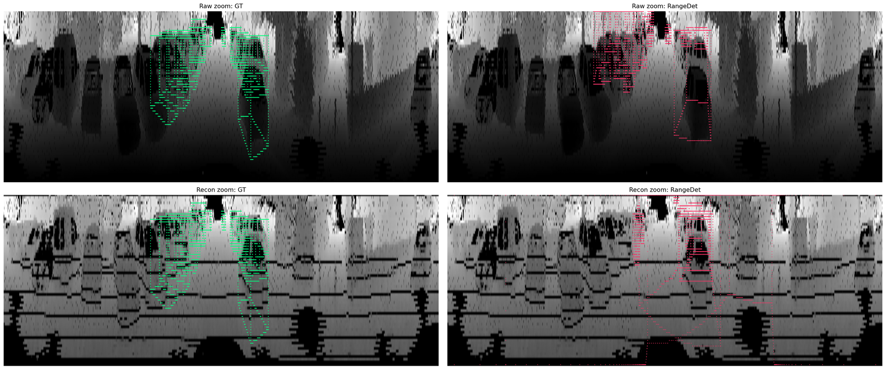
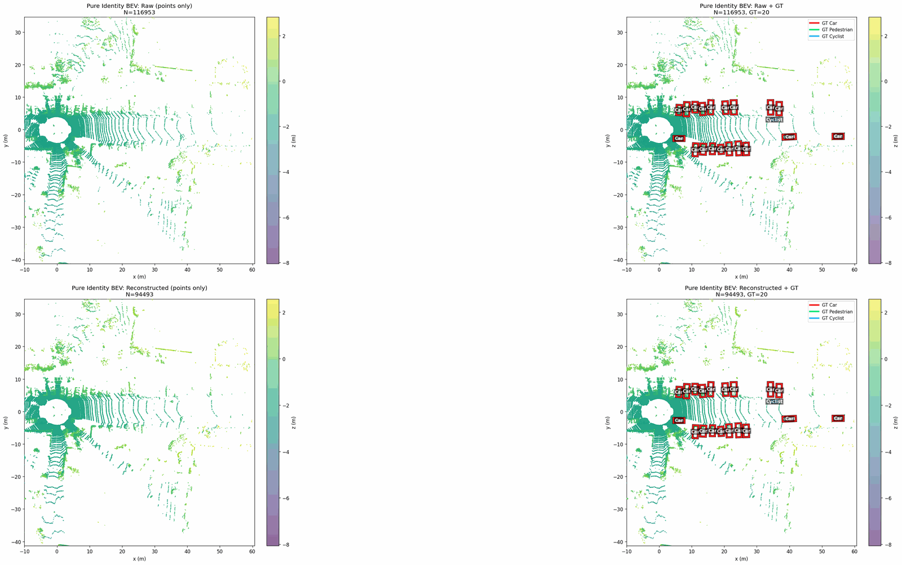

Can a LiDAR codec allocate rate by downstream detection relevance instead of treating every region of the range image equally?
Research In Progress
Detector-facing LiDAR compression, judged by what survives downstream.
This project asks a simple question: if a LiDAR codec preserves pixel-level appearance but breaks the detector, what exactly failed? The repository builds a learned range-image compression pipeline, evaluates it in two downstream tracks, and uses qualitative diagnostics to localize the real bottlenecks.
- Latest public framing: March 17, 2026
- Track 1: PointPillars endpoint
- Track 2: RangeDet endpoint

Abstract
What the project is really about
The detector baseline is no longer the main blocker. The dominant failure is now in the compression and reconstruction path.
The work is not paper-finished yet, but the pipeline, failure modes, and strongest intermediate findings are already worth showing clearly.
Method
Two downstream tracks are used to separate detector issues from codec issues

Track 1
Point cloud → range image → point cloud → PointPillars
This track measures whether reconstruction quality survives a full point-cloud export and a detector endpoint. It is the harshest test of geometry preservation.
Track 2
Point cloud → range image → RangeDet
This track removes the project-unproject loop and asks whether the range-image detector can still operate once the codec output enters the pipeline directly.
Current status
The page emphasizes bottlenecks, not overclaimed wins
The strongest story today is diagnostic: raw/basic detector behavior is repaired, while codec-driven artifact patterns remain visible and measurable.
Results
The main message should be visible before anyone reads a paragraph



Takeaways
Three points worth remembering after one pass
The detector baseline is no longer the excuse
Track 2 raw/basic behavior is now strong enough that failure can be attributed to the codec path with much more confidence than before.
Projection itself already throws information away
The current workflow is fighting two problems at once: project-unproject sparsification and reconstruction artifacts introduced by the codec.
The next useful work is targeted, not broad
Mask fidelity, anti-banding recovery, and detector-aware auxiliary targets are more important right now than trying to oversell a final result.
Appendix
Supporting figures and audit-style notes still exist, but they are not the main story.
The gallery is where notebook-like diagnostics belong. The claims page is a conservative evidence map, useful for thesis or committee review, not for first-glance project presentation.